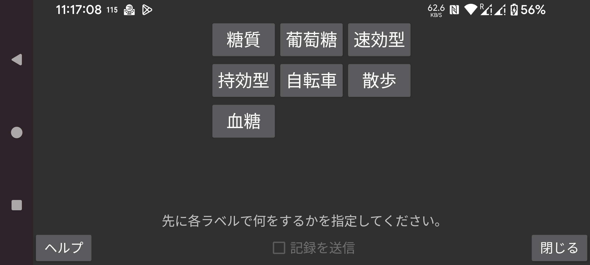

ar be de es fr hi it ja ko nl pl pt ru tr uk uz zh en
記録をLibreviewへ送信するには「記録を送信」をオンにします。「記録を送信」をオンにする前に、各ラベルについて、そのラベルで入力された記録をどのようにLibreviewへ送信するかを指定する必要があります。ラベル自体は左メニュー→設定→「数値ラベル」で作成・変更・削除できます。
Libreviewへコメントとして送信するラベルには次の制約があります。ラベルを変更した後に、以前のラベルで入力された記録の削除や変更を行っても、Libreview側には反映されません。たとえば以前「自転車」というラベルで「20」を入力し、ラベルを「サイクリング」に変更した上で「20」を「25」に変更しても、Libreview側ではこの変更は反映されず、「自転車 20」と「サイクリング 25」の両方が残ります。対処方法は、Libreview上で現在のデバイスを削除し、Jugglucoで データ再送信 を押すことだけです。